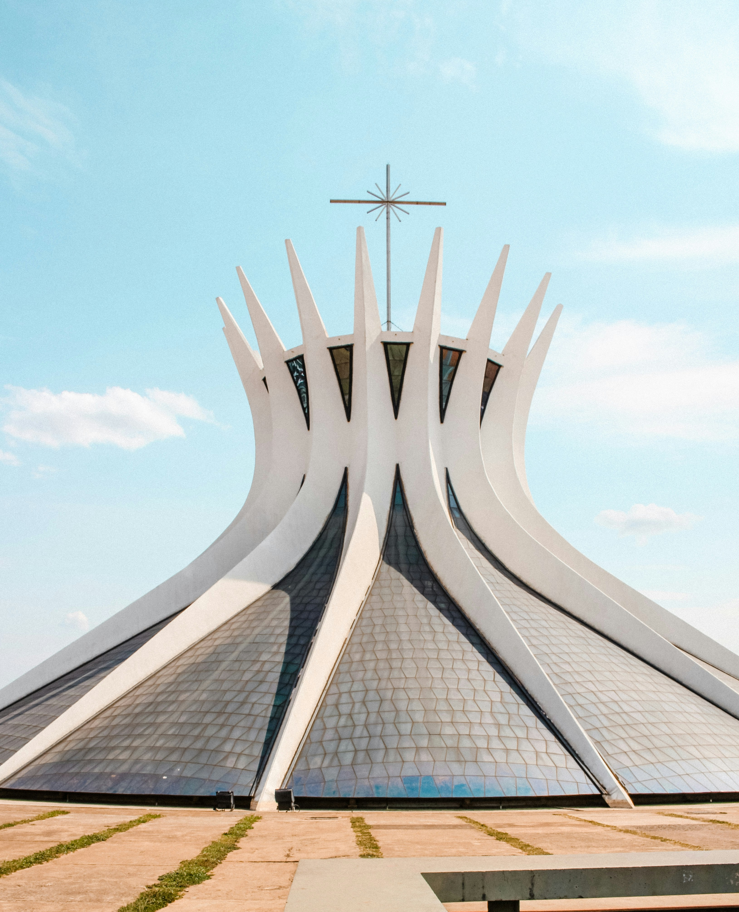
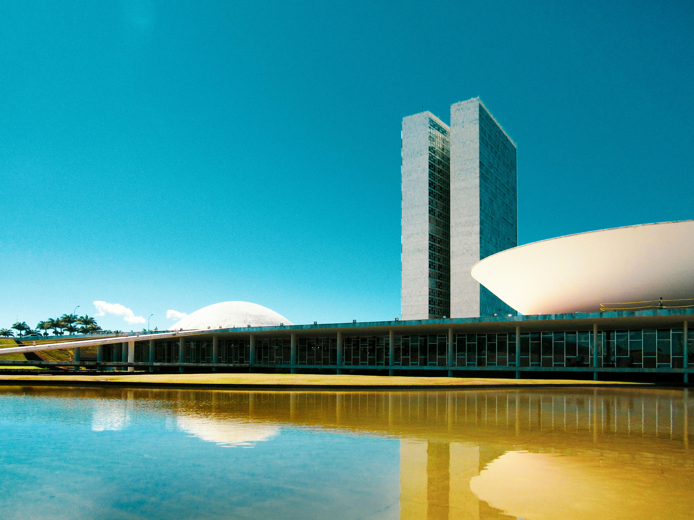
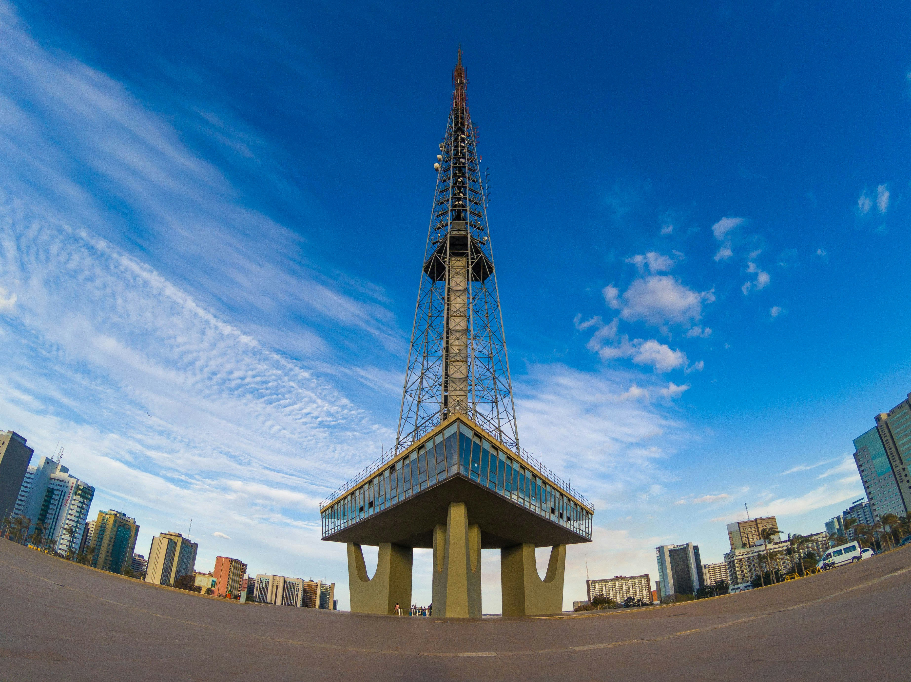
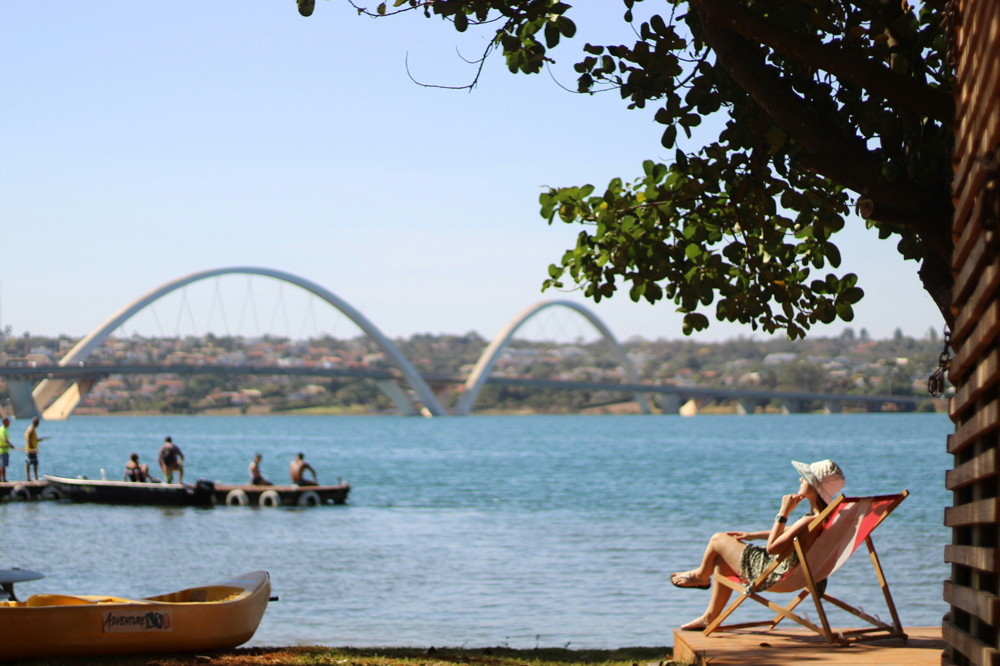
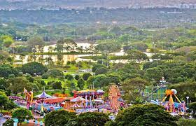
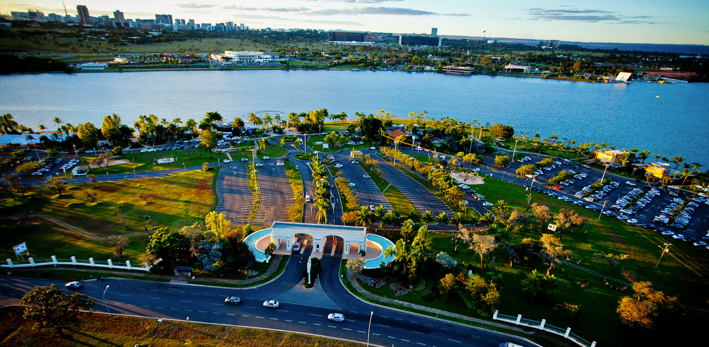
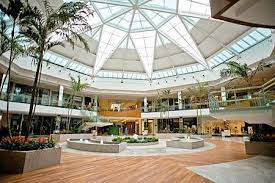
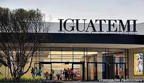
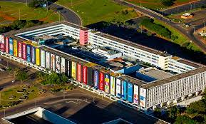

Monuments
Cathedral
Score: ♥♥♥♥
In addition to its religious significance, the Brasília Cathedral is a popular tourist attraction and cultural landmark. Visitors from around the world come to admire its unique architecture and experience its serene interior ambiance. The cathedral is also a venue for musical performances, art exhibitions, and other cultural events.
National Congress
Score: ♥♥♥♥
The National Congress building in Brasília is not only a functional seat of government but also a monumental work of art and architecture that encapsulates the spirit and values of the Brazilian nation. The domes represent the legislative power of the Chamber of Deputies and the Federal Senate, while the horizontal slab symbolizes the unity and balance between the two houses of Congress. The open plaza in front of the building serves as a public space for gatherings and demonstrations, emphasizing the accessibility and transparency of the democratic process.
TV Tower
Score: ♥♥♥♥
The TV Tower has become a popular destination for both tourists and locals alike. Visitors can take an elevator to the top of the tower to enjoy the panoramic views, visit the souvenir shops, or dine at the tower's restaurant, which offers a unique dining experience overlooking the city. The area surrounding the TV Tower is often used for cultural events, festivals, and fairs, further adding to its significance as a landmark and gathering place in Brasília.
JK Bridge
Score: ♥♥♥♥
The Juscelino Kubitschek Bridge, commonly known as the JK Bridge, is a prominent landmark in Brasília. Named after the country's former president, the bridge is one of the city's most iconic structures. Beyond its functional role, visitors can admire the bridge's sleek design and panoramic views of Lake Paranoá and the surrounding cityscape.
Nature
City Park
Score: ♥♥♥♥♥
Brasília's City Park, also known as "Parque da Cidade", is one of the largest urban parks in Latin America and a prominent recreational area in Brasilia. The City Park boasts a diverse range of natural landscapes, including woodlands, grassy meadows, and a large artificial lake. The park's flora includes native cerrado vegetation, along with various trees, shrubs, and flowering plants. The park offers a wide range of recreational activities for visitors of all ages. These include walking and jogging trails, cycling paths, picnic areas, playgrounds, and sports facilities for activities such as soccer, volleyball, and basketball. There are also designated areas for outdoor fitness equipment and exercise classes.
Pontão
Score: ♥♥♥♥♥
Pontão do Lago Sul, commonly known as Pontão, is a popular leisure and entertainment complex located on the southern shore of Lake Paranoá in Brasília. Overall, Pontão do Lago Sul offers a unique blend of dining, entertainment, and recreational activities in a scenic lakeside setting, making it a must-visit destination for both locals and visitors.
Ipê Season

Score: ♥♥♥♥
"Ipês" are iconic flowering trees that are commonly found throughout the city. These trees belong to the Tabebuia genus and are known for their vibrant display of colorful blossoms, which normally bloom during the dry season in Brazil, between July and September. There are several species of Ipês that can be found: Tabebuia impetiginosa (pink ipê), Tabebuia chrysotricha (yellow ipê), and Tabebuia roseo-alba (white ipê). Each species produces distinctively colored flowers, adding to the city's visual appeal during blooming season.
Malls
Parkshopping
Prices: ⋄⋄⋄
Most popular mall in the city. There is a train staion that stops there, or you can go by car, but good luck finding a parking spot. Here you will find stores for everything, a lot of entertainment options and stores prices ranging from expensive to cheap.
Iguatemi
Prices: ⋄⋄⋄⋄⋄
This one is for people with a bigger budget. Very pretty, but be prepared to pay extra in stores and services.
Conjunto Nacional
Prices: ⋄⋄
First mall to be build in Brasilia. Is near the central bus station. Has a lot of department stores, but also a few brand stores.